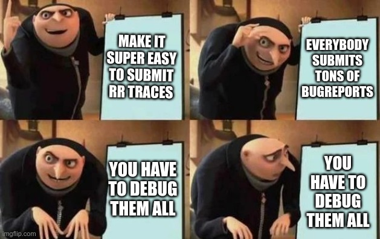

Julia has a feature where you can report bugs and crashes from the
command line. You just run your program with
julia --bug-report=rr, and it sends a crash report plus an
rr trace of the process to our servers for us to take a
look at.

This is Keno's
meme, and I have unabashedly stolen it.
Sometimes we get some crazy stuff. This is in fact not the first time
that someone from the Julia team has found something crazy in a crash
dump. Keno wrote a similar (and substantially more detailed) article here,
where he used rr to debug a process where the issue turned
out to be faulty memory.
Where Keno visually detailed how he found the bug, I'm just going to rant from memory. I wish that I had kept better records. Live and learn.
Julia is a dynamically dispatched and garbage collected language. The bug manifested itself as a random crash in function dispatch inside the interpreter, which is also written in Julia. The function dispatch code is well tested. When the interpreter crashes, it's generally the case that there was already memory corruption.
These sorts of bugs generally suck to find. When you're writing C,
you can usually just compile with -fsanitize=address.
Address Sanitizer will tell you when you overwrite memory that doesn't
belong to any known variable. Unfortunately, the Julia runtime doesn't
support being compiled with asan because it depends on third party
binaries that were not compiled with asan. This means that when
our binary reaches into memory allocated for variables in those
libraries, asan will throw a false positive and crash. When one part of
the process is compiled with asan, it all must be.
Without msan as a crutch, I decided to do as my forebears did and
guess. I loaded up rr, typed bt full, and...
even after a while of gawking at it, this stack trace doesn't make any
sense. It very clearly doesn't follow the control flow of the source
code. Why?
Dispatch in Julia is dynamic. What must have happened is that either a C function pointer or Julia object was written on top of another. But... how? And where?
Reading through the backtrace, I found that the process crashed after
a jl_call to abstract_invoke(). That rules out
that a C function pointer is the culprit. We're looking for a Julia
object written on top of another.
I was still new to the Julia codebase at this point, so for a little while I was stuck. I spent half an hour reading different parts of the runtime that the process was touching. Nothing seemed to pop out at me. Eventually I started reading the garbage collector, and the answer seemed obvious.
When Julia objects are allocated, they are never relocated. They stay there forever, until they are collected. Therefore, it is actualy impossible that an object was written on top of another... unless it happened in the garbage collector's allocator.
So, I set a breakpoint on jl_gc_alloc(), and
jl_gc_sweep() and watched the pointers that came out of the
allocator. Sure enough, jl_gc_alloc() returned the same
pointer twice before jl_gc_sweep(). That is not supposed to
happen. The question remains, why is it happening?
When I descended deeper, I found that jl_gc_alloc() just
calls malloc(), offsets the resulting pointer, and does a
bunch of bookkeeping, and it was actually malloc() that
returned the same thing twice.
... Excuse me, what?
I time travelled back and set a breakpoint on free().
Nope. It isn't freed. Libc just straight up returned the same pointer
twice. What? How does that happen?
Collecting myself, I noted that there was an extra call to
malloc() between the two calls to
jl_gc_alloc(). What is that?
When I travelled to it and typed bt once more into
rr, I saw that call to malloc() happened on a
signal stack inside a call to dlopen(). Suddenly, I knew
exactly what the bug was and where.
Most C programmers understand that the linker can do dynamic linking for you. Few understand dynamic linking's perilous interaction with signal handlers.
It doesn't help that signal safety is a difficult topic for beginners
to wrap their heads around in the first place.
man signal-safety is present, but doesn't do the topic
justice. The short version of the rant is that if a function is not on
the list of allowed functions from man signal-safety, do
not call it from a signal handler. If you do, then understand you are
doing so at your own peril. It is also against the rules to modify any
shared global state, or risk the same sort of corruption.
This is because when a signal handler executes it pauses the current
thread wherever it is. That is to say, suppose a thread calls
malloc() and is interrupted halfway through by a signal
handler. That signal handler then also calls malloc().
It obviously isn't, but for simplicity's sake suppose that
malloc() is implemented something like this:
void* freelist[FREELIST_SIZE];
size_t freelist_size = 0;
void free(void* p) {
freelist[freelist_size++] = p;
}
void* malloc(size_t n) {
void* ret = freelist[freelist_size - 1];
/* THREAD PAUSED HERE FOR SIGNAL HANDLER */
--freelist_size;
return ret;
}In that circumstance, when the return value is decided and the thread
is paused before the bookkeeping completes, you can see how
malloc() would return the same thing twice. The same thing
happens inside glibc. It grabs a pointer from the freelist, but doesn't
completely erase the record of it in the same instruction. This can also
lead to the allocator getting corrupted.
What makes this bug so insidious is that people don't know
they are doing something unsafe by calling ostensibly signal-safe code
from a signal handler. The linker inserts a call to
dlopen(), and that's what calls malloc(). Two
hidden layers.